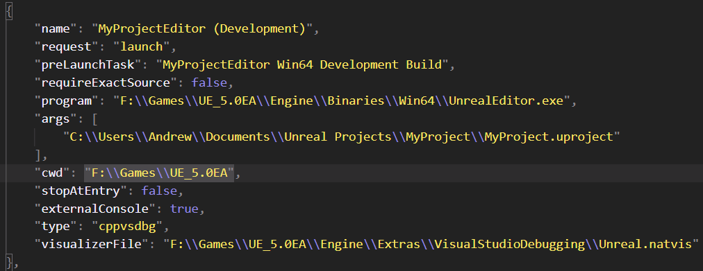

A guide on using UE5 with VS Code, includes setup, building and debugging (including debugging with Live Coding enabled)
These are instructions built from my own experimentation with UE5.0 and googling about (I have linked the posts that helped me below), they may not be the best way to do things. This Guide is made for Windows, most of this should work on all platforms with 2 exceptions.
WARNING: Live coding is still an experimental feature and is not perfect. It can create strange bugs, so if you run into a strange bug while live coding it can often be a good idea to rebuild and restart the editor first to rule out it being caused by live coding. WARNING: Assuming (I haven't confirmed this) live coding has the same limitations as the UE4 Hot reloading then it is likely that changes to .h files and to constructors will require a full editor rebuild and restart.
Install UE5 and create a new C++ project (this should also work with a Blueprint project I think...). Once your project is open go to Edit -> Editor Preferences -> Source Code and select VS Code
If you want to use Live Coding which allows you to rebuild your code without having to restart the UE5 editor, then while in Editor Preference go to Live Coding and select and enable live coding
To generate a VS Code project file usually you would go to Tools -> Generate VS Code Project Files. However, this is currently broken in UE5.0, so we need to call UnrealBuildTool ourselves.
Open a command prompt in [UE5InstallDir]/Engine/Binaries/DotNet/UnrealBuildTool
and then use this command line .\UnrealBuildTool.exe -projectfiles -project="[full path to your project].uproject" -game -rocket -progress -engine -VSCode
Thanks to u/Cyrius42 on Reddit for this tip: Reddit Question.
You should now be able to open your project in VS Code.
Once your project is setup in VS Code you should be able to open the command bar and run build task, select the configuration you want to build. If you are not sure what each configuration means, select [Your Project name] Development
To Run/Debug the editor, open the debug panel in VS Code and in the configuration selection drop down at the top select [Project name] Editor [preferred configuration]. Now run the debugger the way you normally would. By default the configurations also recompile when starting debugging.
Similar to running the editor, open the debug panel in vs code and select [project name] [preferred config]. However, at the time of writing there is a bug in the VS Code project generation which will stop this from working. To fix this open the Launch.json file in VS Code, find the non editor configs for your project and look at the program line, if the exe at the end is UnrealGame.exe it will need changing to the name of the exe your project spits out (usually [ProjectName].exe).
Firstly please read the disclaimer section about issues and limitations of Live coding and decide if you want to use it.
To setup live coding make sure it is enabled in UE5 (see setup section).
In the bottom right corner of UE5 Editor window click the button with a bunch of squares to trigger a code recompile.
You can also press Ctrl+Alt+F11 while in the editor to trigger the recompile.
WARNING: I have only tested this a little bit so your mileage may vary.
Debugging will work so far but if you have tried making a change with live coding while debugging you will likely have found that break points no longer work.
To allow VS Code to continue to be able to debug while using live coding we need to disable Require Exact Source. To do this go to Launch.json, find the configs you want to debug with live coding and add the following line:
"requireExactSource": false,
